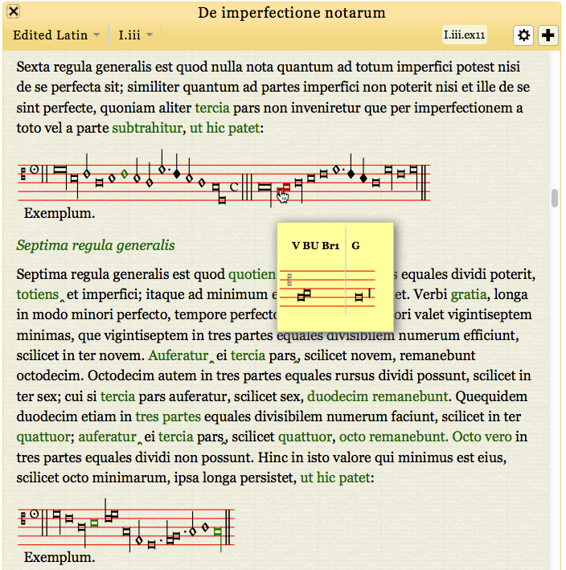

  <div class="content">
  	<div class="contentbox">
      <div class="explanation navigation">
        <div class="explanation-row">
          <div class="cell"></div>
          <div class="cell"><a href="../#">Up (website guide)</a></div>
          <div class="cell"></div>
        </div>
        <div class="explanation-row">
          <div class="cell"><a href="3.html">Back (variant pop-ups)</a></div>
          <div class="cell"></div>
          <div class="cell"><!--<a href="../Facsimiles/1.html">Next (Viewing facsimiles)</a>--></div>
        </div>
      </div>
      <h3>The edition pages: musical variants</h3>
      <p>Musical variants are marked and described in a very similar
        way to textual variants. Hovering over a green indication
        shows relevant information about variants, and clicking on the
        indication fixes the information and allows the window to be
        dragged around.</p>
      <div class="helpshot h716">
        
      </div>
    <!--end .contentbox -->
  	</div>
    <!-- end .content -->
   </div>
